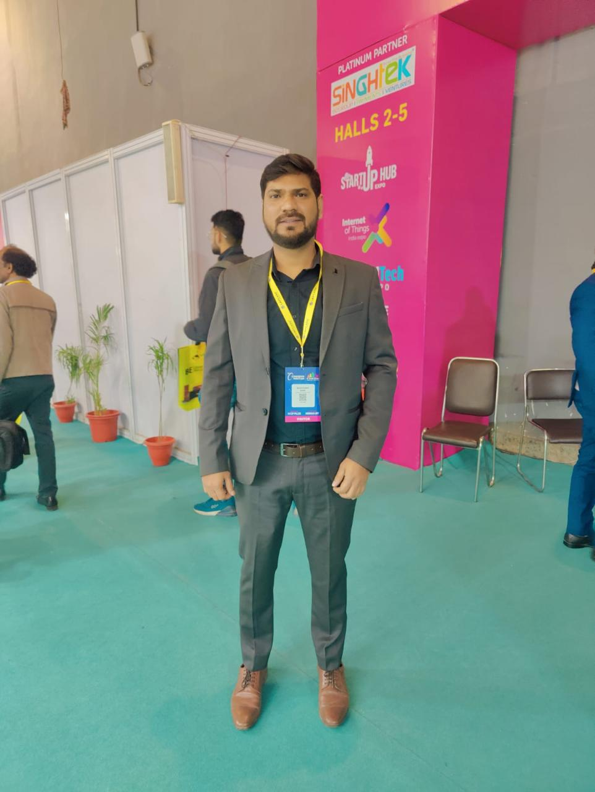

Nilesh Kumar Karn
Senior DevOps & Cloud Infrastructure Engineer
11+ years of hands-on expertise architecting cloud infrastructure, building CI/CD pipelines, and orchestrating containerized workloads on AWS & Azure at enterprise scale.
Technical Skills
A comprehensive toolkit built over 11+ years of enterprise infrastructure engineering.
Cloud Platforms
DevOps & CI/CD
Container & Orchestration
Linux Administration
Security & Networking
Monitoring & ITSM
Work Experience
From Linux server support to Kubernetes-based cloud architecture — a decade of progressive growth.
- Designed and built AWS infrastructure including EC2, ELB, S3, EBS, and Security Groups for enterprise-grade IBM MFT (Managed File Transfer) workloads.
- Led migration of on-premise applications to AWS, coordinating with application teams to create and configure custom AMIs.
- Planned, implemented, and maintained Kubernetes clusters for container orchestration of MFT services.
- Managed IBM Sterling Secure Proxy (SSP) to secure SFTP, FTPS, Connect Direct, and HTTPS connections for global enterprise clients.
- Operated SEAS (Secure External Authentication Server) and LDAP-based customer authentication for global clients.
- Managed TLS/SSL certificate lifecycle — renewals, replacements, and key management (public/private) for secure connections.
- Used IBM Control Center to monitor and troubleshoot Connect Direct, Sterling B2Bi adaptors, and MFT applications.
- Handled incidents, changes, and problems via IBM Salesforce; utilized JIRA for Agile project management.
- Built and maintained CI/CD pipelines using Jenkins, Maven, Git, and Ansible for Health Care (QHIX) and HR SaaS (EMPOW HR) platforms.
- Architected and configured VPCs, EC2 instances, Security Groups, Network ACLs, and Auto Scaling groups on AWS.
- Sole administrator responsible for access control of the entire infrastructure — managing IPs, security groups, and remote access for distributed global teams.
- Developed Ansible YAML playbooks for automated patching, configuration management, and application deployments.
- Managed Testing, Staging, and Production environments end-to-end with full infrastructure-as-code approach.
- Performed code quality and security analysis using SonarQube; managed SSL certification.
- Handled P1, Potential P1, and critical incident escalations; supported server and application migrations.
- Monitored infrastructure using Nagios; managed client communications via Slack, Microsoft Teams, and Remedy/Zendesk.
- Operated CafeX Communications SDK support — managing on-premise and AWS servers (Apache, Tomcat, JBoss) and WebRTC application deployments.
- Administered 200+ production Linux servers (CentOS/RHEL) hosting 800+ Fortune clients, maintaining critical uptime SLAs.
- Managed multiple Tomcat instances (5.5.7 and 7.0.19), Apache Web Server (1.3.x/2.0.x) and JDK environments on Red Hat Linux.
- Performed daily monitoring of CPU, memory, disk utilization, and mail server queues; produced detailed reports for management.
- Managed weekly backups of client applications and databases using NetVault for all production servers.
- Installed and configured MySQL server; integrated MySQL with Tomcat using DBCP connector; performed DB backup and maintenance.
- Wrote and modified Bash/Shell scripts for automation using echo, cut, read, print, and other command-line tools.
- Managed ZenDesk ticketing system and provided technical support for application and server issues.
- Maintained password security protocols and root access database for all production servers.
Key Projects
Enterprise-scale infrastructure and DevOps initiatives delivered across cloud, security, and automation domains.
IBM MFT — Kubernetes & Cloud Architecture
Enterprise-grade Managed File Transfer platform migrated from on-premise to AWS and containerized with Kubernetes. The system supports global enterprise clients including Fortune 500 companies with secure, high-throughput file transfer workflows via Connect Direct, Sterling B2Bi, and SFTP/FTPS protocols.
Key Deliverables
- Designed and provisioned full AWS infrastructure: EC2, ELB, S3, EBS, VPC, Security Groups.
- Led on-premise to AWS migration — zero-downtime cutover strategy with custom AMIs.
- Implemented IBM SSP (Sterling Secure Proxy) for securing all inbound connections.
- Deployed and managed SEAS for LDAP-backed global customer authentication.
- Full TLS/SSL certificate lifecycle management for all production endpoints.
- Kubernetes cluster setup, planning, and ongoing orchestration of containerized MFT services.
QHIX — AWS Healthcare Cloud Platform
Multi-organization healthcare platform providing SaaS-based tools and services to healthcare organizations across the US. Architected and maintained the full AWS cloud infrastructure, CI/CD pipeline, and DevOps automation for development, staging, and production environments.
Key Deliverables
- Configured VPCs, EC2 instances, Auto Scaling groups, ELB, and S3 storage for healthcare workloads.
- Built on-demand CI/CD pipelines using Jenkins, Maven, and Git for automated builds and deployments.
- Created role-based Ansible YAML playbooks for server patching and application deployment.
- Enforced AWS security: IAM policies, Security Groups, Network ACLs, and SSL certification.
- Implemented code quality gates using SonarQube; automated AWS VM auto-scaling.
- Provided CloudWatch monitoring and cloud VPN support for distributed teams.
EMPOW HR — AWS SaaS HR Management System
Centralized employee management SaaS platform serving a global distributed workforce. As the sole infrastructure engineer, managed the complete AWS setup, access control, CI/CD automation, incident management, and global client support operations with 24×7 SLA adherence.
Key Deliverables
- Sole administrator for all AWS infrastructure access control — Security Groups, Network ACLs, IP whitelisting.
- Developed CI/CD pipelines and built Test/Dev/Staging/Prod infra from scratch on AWS.
- Implemented Nagios-based monitoring; handled P1 and critical incident calls.
- Network troubleshooting, upgrades, and optimization across distributed client environments.
- Created and maintained SOPs; ran Service Improvement Programs for operational efficiency.
- Engaged clients and suppliers to ensure fault resolution within contracted SLA timeframes.
CafeX Communications — On-Premise SDK Support
Global WebRTC and real-time communications SDK platform supporting Fortune 500 clients like Dell. Provided 24×7×365 on-premise and cloud server support, SDK integration, and application hosting for enterprise communication solutions including SIP, WebRTC, and third-party voice gateway integrations.
Key Deliverables
- Hosted and maintained solutions on Apache, Tomcat, JBoss, and AWS across multiple regions.
- Analyzed server-side logs for root-cause analysis of SDK and application issues reported by global customers.
- Integrated third-party voice gateways (CUCM, FreeSwitch) with the WebRTC platform.
- Prepared LAMP and XAMPP stacks for developer environments; deployed and secured web applications.
- Monitored AWS servers across regions alongside CAAS production servers for Dell and CafeX clients.
- Maintained 100% customer satisfaction with proactive incident prevention and SLA compliance.
FranConnect — Enterprise Linux Server Fleet Management
Managed the Linux server infrastructure for a franchise management software company serving 800+ Fortune-class clients across 200+ production servers. Responsible for server health, availability, backup, performance monitoring, and database operations at enterprise scale.
Key Deliverables
- Managed 200+ production CentOS/RHEL servers; maintained daily health logs and performance reports.
- Administered multiple Tomcat instances (5.5.7, 7.0.19) and Apache (1.3.x/2.0.x) web servers.
- Weekly backups of all 800+ client databases and file systems using NetVault.
- MySQL installation, configuration, DBCP connector integration with Tomcat, query execution, and DB maintenance.
- Authored and maintained Bash/Shell scripts for operational automation and routine tasks.
- Monitored CPU, memory, and disk utilization for all servers; escalated and resolved critical issues proactively.
Education & Training
Strong technical foundation backed by formal engineering education and industry training.
Bachelor of Technology
Industrial Training — BHEL
Industrial Training — BSNL
AWS Solutions Architect
Let's Build Something Great
Open to senior DevOps, Cloud Infrastructure, and SRE opportunities. Let's connect.
11+ Years of Cloud Expertise
From Linux server floors to Kubernetes clusters in the cloud — a decade of building resilient, scalable infrastructure for Fortune 500 enterprises.